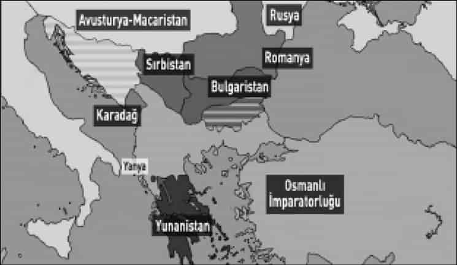
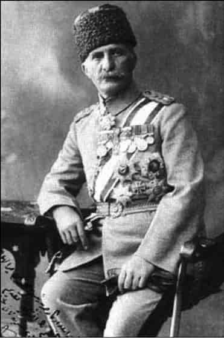
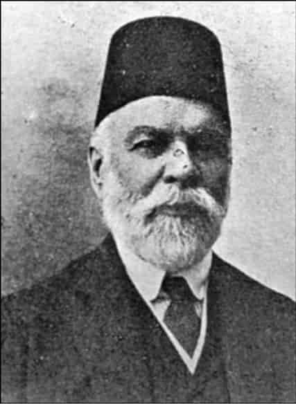
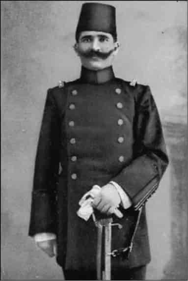
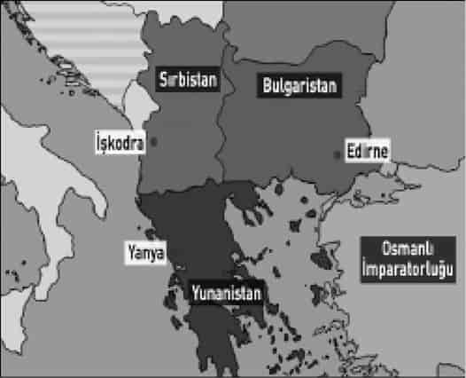
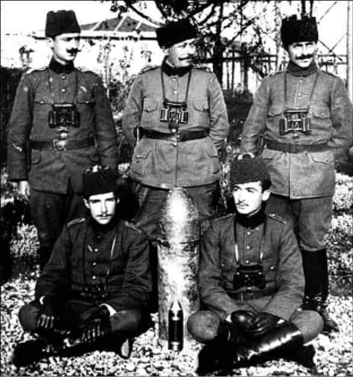
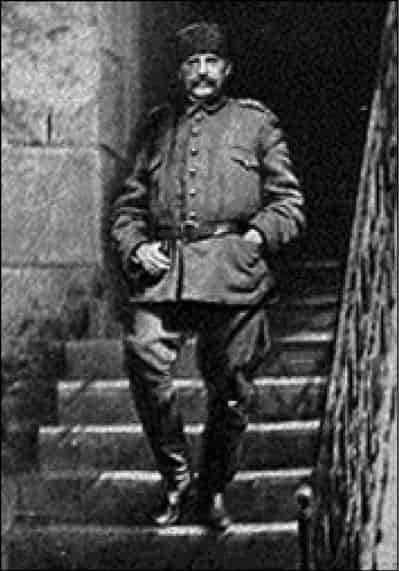
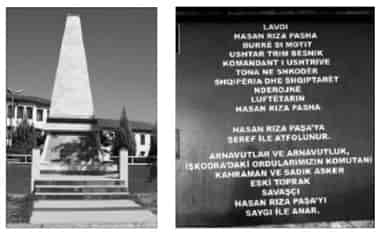
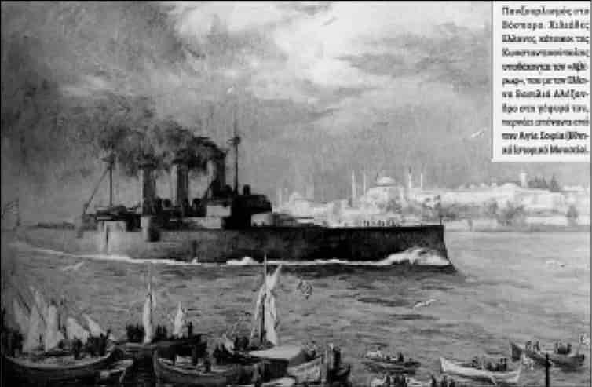

4

Rumeli’de ay yıldız kalmadı
Selanik’i alan yıpranmamış ve muzaffer Yunan ordusu bununla yetinmeyecekti. Hedeflenen Megali İdea coğrafyası çok geniş bir alanı kapsıyordu. Yunan ordusu Selanik’ten Kuzeydoğu’ya, Trakya’ya doğru yürüyüşe geçse oraları müttefiki Bulgar ordusu işgal etmişti. Onun da sırası gelecekti, ama şimdi değil, Birinci Dünya Savaşı’ndan sonra!
Selanik’i alan Yunan ordusunun yürüyebileceği yer, Epir bölgesiydi, yani o zamanki Yunanistan’ın kuzeybatısında bulunan ve hâlâ Osmanlı’nın egemen olduğu Yanya vilayeti...
Burası Megali İdea’nın hedefleri arasındaydı. Selanik’i tek kurşun atmadan almak, Yunan milliyetçiliğini ateşlemiş, Yunan ordusunun moralini büsbütün yükseltmişti.
Yanya’nın önemi birkaç sebepten geliyor. Sırplar karşısında Kumanova ve Manastır’da, Yunanlar karşısında da Yenice’de bozguna uğrayan Osmanlı ordusunun büyük bir bölümü dağınık vaziyette bu bölgeye kaçmış, Yanya vilayeti topraklarına adeta sığınmıştır. Çünkü bu bölge hâlâ Osmanlı toprağıdır. Ayrıca önemli bir Müslüman Arnavut nüfusu vardır. Yanya vilayetindeki Türk kolordusunun kumandanı Harp Akademisi’ni Almanya’da okumuş kahraman bir subaydır: Albay Esat Bey, savaş devam ederken Tümgeneralliğe yükselecek, paşa unvanını alacaktır. Cumhuriyet devrinde soyadı kanunu çıkınca, Bülkat soyadını seçecektir. Yanya doğumludur, 50 yaşındadır. Yirmi tane nişan sahibidir. Almanca, Fransızca ve Rumca bilir.1
Kardeşi Yarbay Vehip Bey, Yanya Müstahkem Mevkii Kumandanı’dır.

Yanya müdafii Esat Paşa’nın askerlik kalitesini belirtmek için ifade edelim; Mareşal Fevzi Çakmak’a göre, Selanik eyaletindeki 8. Mürettep Kolordu’nun komutası Hasan Tahsin Paşa gibi biri değil de Esat Paşa gibi iyi eğitimli ve kahraman ruhlu bir kumandanın elinde olsaydı, sonuç farklı olabilirdi.
General Sabuncakis kumandasındaki Yunan birlikleri 1912 yılının Kasım ayından beri Yanya bölgesine girmiştir, sonuç vermeyen muharebeler olmaktadır. Yunan ordusu 9 Kasım’da Selanik’i aldıktan sonra, 4 Aralık’ta Yanya bölgesine yürümüş, Sabuncakis’in kuvvetleri güçlenmiştir.
15 Aralık’ta Manulasa mevkiindeki şiddetli muharebede Tuğgeneral Cavit Paşa’nın şehit düşmesi Türk ordusunun geri çekilmesine sebep oldu. Yunanlar Preveze’yi ele geçirdiler.
Aram Andonyan, şehit Cavit Paşa’nın ordusunu şöyle anlatır:
Cavit Paşa’nın ordusunda çok hasta asker var, çünkü çok açlık çektiler. Asker genel olarak mısır koçanına katılan unla besleniyordu. İyi pişmediğinden mide bozukluğu, dizanteri ve başka hastalıklara sebep oluyordu.2
Yanya savaşında Arnavut milliyetçileri
Bu sırada Osmanlı’ya bir darbe de Arnavut milliyetçileri indirir. Doğu cephesinde Bulgarlar İstanbul kapısına dayanmıştı, Batı cephesinde Kumanova ve Yenice yenilgilerinden sonra Üsküp, Manastır, Selanik kaybedilmişti. Bundan başka, Sırp ve Karadağ kuvvetleri Osmanlı’nın Doğu Rumeli topraklarındaki Resne, Draç, Debre, Ohri ve Tiran’ı ele geçirmişlerdi. Böyle feci bir zamanda Osmanlı Meclis-i Mebusanı’nda 1908-1912 döneminde milletvekili olan İsmail Kemal Vlora’nın liderliğinde 83 Arnavut milliyetçisi 29 Kasım 1912’de Avlonya şehrinde Arnavutluk’un bağımsızlığını ilan ettiler, şehri Arnavut bayraklarıyla donattılar. Arnavut milliyetçiliğini birazdan göreceğiz. Bu sırada İsmail Kemal, Osmanlı ordusundaki Arnavutları orduyu terk edip memleketlerine dönmeye çağırdı. Çağrıya önemli oranda uyanlar oldu, Arnavutların ayrılmasıyla Osmanlı ordusu daha da güç kaybetti.3

Yanya müdafii Esat Paşa (Bülkat).
Yanya savaşına üsteğmen olarak katılan İsmail Hakkı (Okday) Bey, Arnavut milliyetçiliğinin bu tavrının Osmanlı devletine “muazzam zarar verdiğini” yazıyor:
Arnavut askerlerin kaçmaları Yanya’nın teslimini hızlandırmış ve kolaylaştırmıştır. Arnavutlar bizzat kendi memleketlerini müdafaa edecek veya hiç olmazsa müdafaayı ele alan Türklere yardım edecekleri yerde, grup grup kaçarak öz vatanlarını düşmana terk etmişlerdir.
Yanya’daki Arnavut askerleri arasında, Arnavutluk istiklalinin tek taraflı ilanından itibaren müthiş bir siyasi propagandaya girişildiği görüldü. Bu hainane propaganda o derece büyüdü ki, Yanya’da bulunan 12 bin kişilik Arnavut askerden en az on bini kaçarak Yanya’nın müdafaasını Anadolu’dan gelen erlere bıraktılar...
Yanya doğumlu Esat Paşa, Arnavut askerlere Osmanlı vatanseverliği ruhunu vermek için Arnavutların yiğitlik, mertlik, erkeklik duygularına sesleniyor, “Ben de Arnavudum” diye hitap ediyor, kahramanlığa, Osmanlı Devleti’ne sadakate çağırıyordu. Aksi halde bu toprakların Yunanistan’ın eline geçeceğini hatırlatıyordu. Bunu dinleyen Arnavutlar etkileniyorlar, heyecanlanarak Türk bayrağını öpüyorlardı.4
Arnavutların Osmanlılıkla ayrılıkçılık arasında gelgitler yaşadığını söylemek mümkün. Kahramanca savaşan Arnavut da az değildi. Fakat her halde İsmail Kemal Vlora’nın bağımsızlık ilanı ve ordudaki Arnavutlara yaptı çağrı çok zararlı olmuştu.
Artık 1912 sona ermiş, 1913 yılına girilmiştir, Yanya savaşı devam etmektedir.

İsmail Kemal Vlora, Osmanlı Mebusan
Meclisi’nde milletvekili.
Yanya’ya hücum eden Yunan ordusunun mevcudu 60.000’dir. Yanya Kolordu Kumandanı Esat Paşa’nın 20.000 askeri vardır. Batı ordusundan gönderilen takviye ile 26.000’e çıkmıştır. Fakat Esat Paşa’nın askerlerinden 5.000 kadarı yaralı ve hastadır. Askeri uzmanlara göre Esat Paşa, asker sayısı bakımından 3 misli, silah bakımından 5 misli üstünlüğü olan Yunan ordusuna karşı Yanya’yı kahramanca savunmaktadır.5
Ömer Seyfettin anlatıyor
Esat Paşa’ya Batı ordusunun gönderdiği takviye kuvvetlerinin içinde, ünlü hikâyecimiz Teğmen Ömer Seyfettin de vardır. Ömer Seyfettin, Yanya’da Kanlıtepe adlı mevzideki savaşı ve esir düşmesini hatıralarında şöyle anlatır:
20 Ocak 1913
Kanlıtepe’deyiz. Toplar o kadar müthiş patlıyor ki...
İki istihkâm yıkıldı, neferler altında kaldı.
Bir saatten beri belki iki bin gülle olduğumuz yere düştü. İhtiyatlar ve bütün taburlar geri çekilmeye başlamış.
Ölmeyen askerler kaçıyorlar. Yalnız kaldım. Ben de gidiyorum.
Artık harp sayfasını kapamalı. Kaçamadım. Yirmi bir neferle esir düştüm. Bulunduğumuz tepeden Efzunlar göründü “Teslim olun” diye haykırdılar. Biz de ellerimizi kaldırdık, “teslim” diye bağırdık. Neferleri bağladılar, beni yüzbaşıya verdiler.6
Muharebe böyle devam ediyor, Yanya direniyor. Batı basınında Yunanistan’ın başarısızlığına dair haberler çıkıyor.
Plevne’de Rus ordusunun kumandasını nihayet nasıl Grandük Nikolay Nikolayeviç aldıysa, Yanya’da da Yunan ordusunun kumandasını 31 Ocak 1913’te Veliaht Prens Konstantin eline aldı. Esat Paşa ile Konstantin Alman Harp Akademisi’nden arkadaştırlar. Konstantin birkaç defa çok kibar bir üslupla mektup yazarak, Osmanlı’nın durumunun çaresiz olduğunu belirtip daha fazla kan akmaması için Yanya’nın teslim olmasını istedi. Fakat Esat Paşa aynı kibarlıkla ve edebi dille verdiği cevaplarda teslim olmayı reddetti.
Takviye alan Yunan ordusu mart başında hücumlarını artırdı. 4 Mart’ta Yunan topçusunun Yanya’ya yağdırdığı mermi sayısı 10.000’dir, evet bir günde on bin top mermisi, on bin gülle! Ertesi gün, 5 Mart’ta, aynı cehennemî hücum tekrarlandı. Yunan ordusu bu defa Yanya’nın üstüne 18 bin top güllesi attı!7
Osmanlı ordusundaki redif askerler, yani nizami askerlikten sonra ihtiyata ayrılıp orduda tutulan yaşlı askerler ve Arnavut gönüllüler panikledi. Mevziler düşmeye başladı. Direnen askerler de aç ve bitkin durumdaydı. 6 Mart 1913’te kahraman kumandan Esat Paşa teslim olmak zorunda kaldı.8
Yunan ordusu Yanya’ya girdi
Konstantin kumandasındaki Yunan ordusu 1431’den beri 482 yıl Osmanlı toprağı olan Yanya’ya girdi. Yunanlar bu zaferlerini afiş ve kartpostal haline getirerek okul kitaplarına kadar yerleştirdiler.
Yunan ordusu 18 Mart 1913’te de Tepedelen’i aldı.
Savaş tarihçisi Alman Friedrich Immanuel şöyle yazar:
Türkler açlıktan yarı bitkin düşmüşlerdi ve hemen hiç cephaneleri kalmamıştı. Türklerden edinilen bilgilere göre daha ocak ayı başında her tüfek başına 150 mermileri kalmıştı!9
Fevzi Çakmak’ın verdiği bilgilere göre, Yanya’da 19.000 asker Yunanlara esir düşmüştü, bunun 10.000’i hasta veya yaralıydı. 3.000 asker de kaçarak esir düşmekten kurtulup çevredeki Batı ordusu birliklerine katılmıştı. Şehit sayısı, soğuk ve açlıktan ölenler dahil olmak üzere 8.000’dir. Yunanların kaybı ise 15.000’dir. Fevzi Çakmak, Balkan Harbi’nin en kanlı muharebesinin Yanya’da yapıldığını anlatır.
Boşuna mı yapılmıştır?
Yanya kaybedilmiştir ama Fevzi Çakmak’ın belirttiği gibi, Yanya 60.000 kişilik Yunan kuvvetini bağlayarak Yunan ordusunun Çanakkale ve İstanbul’a yürümesi tehlikesini ortadan kaldırmıştır. Yanya’da “Türkler için şerefli, askerler için de yararlı bir tarih sayfası yazılmıştır.”10
Bugün Yunanistan’ın bir vilayeti olan Yanya teslim olduğunda, Rumeli’de Türk bayrağının dalgalandığı tek yer kalmıştır: Bugün Arnavutluk’un bir vilayeti olan İşkodra...
Yanya ve İşkodra direnişlerini incelerken Arnavut milliyetçiliği önemli bir konudur. Müslüman Arnavutların isyan etmesi ve Arap milliyetçiliğinin de kendini göstermesi, hilafete sahip olan Osmanlı üzerinde büyük şok yaratacak, Osmanlıcılık ve İslamcılık yerine Türklük fikrinin gelişmesini hızlandıracaktır.
“Biz Arnavutlar”
Arnavut milliyetçiliğinin uyanışı Balkan Savaşı’ndan öncedir, Abdülhamid dönemine kadar gider. Modernleşmenin, kitle okuryazarlığını gerektirmesi ister istemez dil sorununu da gündeme getirmiştir. Anadilde eğitim ve milli alfabe talebi bütün milliyetçiliklerin ilk adımı olmuştur. Arnavut milliyetçiliği de bu şekilde ortaya çıktı.
1878 Berlin Kongresi’nde çizilen yeni harita, Arnavutlarda topraklarının Sırplara ve Yunanlara verileceği endişesini doğurdu, Arnavut milliyetçiliğinin doğuşuna yol açtı. Abdülhamid’in Balkanlar’da Sırp ve Yunan milliyetçiliğine karşı Müslüman Arnavutları kazanmak ve güçlendirmek düşüncesiyle izin verdiği Arnavut Cemiyet-i İlmiyesi 1879 yılında İstanbul’da kuruldu. Türkçenin büyük âlimlerinden Arnavut asıllı Şemseddin Sami bu cemiyetin kurucularındandır. Arnavut dili, Arnavut edebiyatı ve Latin harfleri ağırlıklı Arnavut alfabesi çalışmaları bu cemiyette başladı.
Şemseddin Sami: Türk ve Arnavut
Şemseddin Sami Arnavut kültür ve kimliğini savunduğu gibi, ülkesine sadakatle bağlı bir Osmanlı vatanseveridir. Arnavut dil ve edebiyatı üzerinde çalıştı; Kamus-ı Türki’yi yazarak, Orhun Kitabeleri ve Kutadgu Bilig üzerine çalışarak Türklük fikrinin gelişmesine de büyük katkıda bulundu. 1850 yılında, bugün Yunanistan’da bulunan Osmanlı vilayeti Yanya’da doğdu. 18 Haziran 1904’te İstanbul’da Erenköy’deki köşkünde vefat etti. Sahrayıcedit Mezarlığı’na defnedildi. Kemikleri 1968 yılında Feriköy’deki aile kabristanına nakledildi.
İlk Türk romanı olarak kabul edilen Taaşşuk-ı Talat ve Fitnat ile ilk Türkçe sözlük olan Kamus-ı Türki’nin yazarıdır. İlk Türkçe ansiklopedi olan Kamus-ul Âlâm da onun eseridir.
Tımar sahibi Arnavut Fraşerî ailesinden Halil Bey’in oğludur. Ortaöğrenimini Yanya’daki bir Rum lisesinde tamamladı. Eski Yunanca, Fransızca ve İtalyanca öğrendi. İstanbul’da uzun süre gazetecilik yaptı. İlk Türkçe ve Fransızca sözlüğü yazarak Batı kültürüyle tanışmada önemli bir eser meydana getirdi. Osmanlıca ve Çağatayca gibi terimlere itiraz ederek bunların “umumi Türkçenin” kolları olduğunu anlattı. Türkçeyi savunan, Türkçenin zenginliğini ve derinliğini araştıran Şemseddin Sami, Osmanlı devlet büyüklerinden Arnavut kökenli olanları vurgulamaya da özen göstermiştir.11
Aynı zamanda Arnavut kültürü ve kimliğinin de öncü isimlerinden biridir. Cemiyet-i İlmiye-i Arnavudiye adlı kültür derneğinin kurucularındandır. Ağabeyi Fraşerili Abdül Bey ile birlikte, 1897’de Latin ve Yunan harflerini kullanan ilk Arnavut alfabesini geliştirdi, 1886’da Arnavutça bir gramer kitabı yazdı. Aynı zamanda sadık bir Osmanlı’ydı, ayrılıkçı eğilimlere şiddetle karşı çıktı. Kardeşi Naim Fraşeri, Arnavut milli şiirinin kurucusu olarak kabul edilir. Galatasaray Spor Kulübü’nün kurucusu Ali Sami Yen’in babasıdır.
Kardeşleri Naim ve Abdullah’la birlikte Şemseddin Sami’nin Arnavutluk’un başkenti Tiran’da heykeli bulunmaktadır. Bu heykellerde Fraşerilerin başlarındaki fes çıkarılarak Osmanlı kimliğinden arındırılmışlardır.
İttihatçılar, Balkanlar’da Arnavutların desteğini almak için onlara vaatlerde bulundular: Meşrutiyet ilan edilince özgürlük gelecek, Arnavutlara kültürel haklar ve özerklik verilecekti. 1908 ihtilaliyle İkinci Meşrutiyet ilan edilince Arnavut milliyetçileri Başkim Kulüpleri adıyla dernekler kurdular. Osmanlı parlamentosunda tanınmış Arnavut milliyetçileri de vardır. Osmanlı parlamentosu, Osmanlılık fikriyle çeşitli milliyetçiliklerin çatıştığı bir meclisti.
Şükrü Hanioğlu: Şimdi burada, iki taraflı bakmak lazım olaya. Bir tarafta, bir kere 1908 İhtilali’nden [Meşrutiyet] sonra Arnavutların bir iddiası vardı. Diyorlardı ki; “Bize bu ihtilale katılmamız karşılığında birtakım sözler verildi, denildi ki bize, sizin kültürel haklarınızı tanıyacağız.”
Bu çok sayıda Arnavut lider tarafından dile getirilen bir konu. Elimizde yazılı bir şey yok ama o kadar çok kişi tarafından dile getiriliyor ki, bir gerçeklik payı olduğunu düşünmek mümkün. Gerçekten de 1908 İhtilali Arnavutların katkısı olmadan yapılamazdı. Biz tabii günümüzde, Osmanlı’nın tek takipçisinin Türkiye olduğunu, tek mirasçısının Türkiye olduğunu düşündüğümüz için, 1908’i de böyle bir Türk ihtilali olarak düşünüyoruz. Ama 1908’de, 1908 İhtilali’ne katılan askeri birliklerin ve çetelerin çoğunluğunu Arnavutlar meydana getiriyordu. Dolayısıyla Arnavutlar bu isyanda, ayaklanmada ve ihtilalde çok büyük bir rol oynadılar. Ama tekrar edeyim, kendilerinin dediği, “Bize bunun karşılığında istediklerimiz verilmedi.”
Arnavutların temel istekleri; özellikle anadilde eğitim yapılması, Arnavutçanın okullarda kullanılmasına izin verilmesi ve kilisedeki vaazlarda da Arnavutçanın serbestçe kullanılması. Özellikle Ortodoks kilisesinde (geçerli dil) Yunancaydı, Arnavutlara Patrikhane izin vermiyordu. Ve bu şekilde Arnavutların başvuruları vardı.
Ve bir de tabii 1910’da Arnavutların Manastır’da bir Alfabe Kongresi oldu. Ondan daha evvel Arnavutların Şemseddin Sami önderliğinde yapılan bir İstanbul alfabesi vardı. Fakat bu çok karmaşık bir alfabeydi. Latin harfleri temelliydi fakat içinde Kiril harfleri de vardı. Yazımı son derece zordu ve bu nedenle Arnavutlar bir kongre topladılar ve 1910’da Latin alfabesi temelli bir alfabeye geçme kararı aldılar. Bu da büyük bir gerginlik yarattı çünkü Şeyhülislam bir fetva verdi, Müslümanlar için Arap alfabesinden başka bir alfabenin caiz olmayacağını söyledi. İttihat ve Terakki de buna çok sert karşı çıktı. Arnavut milliyetçileri ile İttihat ve Terakki arasında çok gergin bir ilişki başladı.
Hatta mesela Meclis-i Mebusan’da Arnavutlar kelimesinin kullanılmasında bile tartışmalar çıktı. Ahmet Rıza Bey Mebusan Reisi olarak uyardı Arnavut mebusları. “İşte biz Arnavutlar, biz Arnavutlar diyorsunuz, böyle konuşmayın, bunun yerine, şu bölgedeki Osmanlılar deyin” şeklinde müdahalelerde bulundu. Daha sonra bu “Biz Arnavutlar” tabiri bir slogan haline getirildi Arnavut milliyetçileri tarafından.
Osmanlı parlamentosunda Arnavut milliyetçisi liderlerden bilhassa ikisinin Balkan Harbi’ndeki rolleri önemlidir: İsmail Kemal ve Esat Toptani... Bunlar Balkan Savaşı’nda Osmanlı’ya ağır darbeler indiren isimlerdir. İsmail Kemal’in 21 Kasım 1912’de Avlonya şehrinde Arnavutluk’un istiklalini ilan ettiğini ve Osmanlı ordusundaki Arnavutları ordudan ayrılmaya çağırdığını görmüştük. Esat Toptani de İşkodra’yı düşmana teslim edecektir.
Uyanan Arnavut milliyetçiliğini yumuşak davranışlarla, makul taleplerini kabul ederek bir süre daha “idare” etmek gerekiyordu; Abdülhamid’in yaptığı buydu. Fakat Arnavutluk’taki olayları bastırmak için yapılan askeri harekâtlarda İttihatçıların aşırı sert politikaları, mesela köylerde, kasabalarda aile reislerinin eş ve çocuklarının gözü önünde falakaya yatırılması gibi şiddet uygulamalarının Arnavutlarda hınç yaratarak Arnavut milliyetçiliğini körüklediğini görmüştük.
Şükrü Hanioğlu: Bundan sonra, İttihatçıların politikaları o kadar sorun yarattı ki, ilişkileri o kadar gerginleştirdi ki, Sultan Reşad sırf Arnavutların hani biraz gönlünü almak için, Selanik üzerinden Kosova’ya gitti...
Sultan Reşad Kosova’da
İttihatçılar, nasırına bastıkları Arnavut milliyetçiliğini yatıştırmak ve devlete sadakat sağlamak için İslam faktörünü düşündüler: Osmanlı padişahı ve İslam halifesi Sultan V. Mehmed Reşad’ı Rumeli seyahatine çıkardılar. 5 Haziran 1911’de Barbaros Hayreddin zırhlısıyla İstanbul’dan denize açılan Sultan Reşad 7 Haziran’da Selanik’te karaya çıktı, muazzam bir törenle karşılandı.
Selanik’ten trenle Üsküp’e, oradan İşkodra’ya geçen Sultan Reşad yol boyunca Rumeli halkının sevgi gösterileriyle karşılandı. 16 Haziran’da Kosova şehidi Sultan I. Murad’ın “Meşhed-i Hüdavendigâr” denilen türbesini ziyaret edip fatiha okudu, Kosova sahrasında Türk ve Arnavut 100.000 Müslüman, Halife Sultan’ın arkasında cuma namazı kıldı.12 Sultan, din ve millet ayırımı yapmadan yoksullara bağışlarda bulundu. Hava birden değişmişti. İsyan halinde bulunan bazı Arnavut grupları padişahın elini öperek silah bıraktılar, sadakat bildirdiler. Osmanlı hükümeti Arnavutların kültürel taleplerini kabul ettiğini de açıklamıştı.
Şükrü Hanioğlu: Sultan Reşad’ın Rumeli seyahati, Kosova sahrasında işte Sultan Murat Hüdavendigâr’ın şehit olduğu yerde namaz kılındı. Bunlar tabii çok büyük jestlerdi ve bu sırada Büyük Kabine de zaten Balkan Harbi’nden önce Arnavutların kültürel haklarını kabul etti. Bunu da kabul edeceğini açıkladı. Yani, İttihatçı politikalar düzeltilmeye çalışıldı. Büyük jestler yapıldı, dediğim gibi Sultan’ın Kosova’ya gitmesi, efendim kabinenin Arnavutların kültürel haklarını kabul etmesi fakat biraz geç kaldı bunlar maalesef. Balkan Savaşı’nda çok ciddi sorunlar yarattı Osmanlı Devleti’ne.
Arnavutlar iki grup
Arnavutlar arasında iki eğilim vardır; Osmanlı’ya sadakatle bağlı olanlar; Osmanlı’nın bir an önce çökmesini ve Arnavut Devleti’nin kurulmasını isteyenler... Prof. Hacısalihoğlu’nun belirttiği gibi, bir kısım Arnavutlar Balkan Harbi’nde Osmanlı’yla birlikte savaşırken, Avlonya ve Berat şehirlerinde taban tutan diğer kısım Arnavutlar Osmanlı’ya karşı vaziyet aldılar, bunlardan Ekrem Vlora’nın “Artık Arnavutluk kendi başına bir devlettir, bu yüzden Türklerin savaşları Arnavutları hiç ilgilendirmiyor” diye asker arasında propaganda yaptığı bilinmektedir. İsmail Kemal baştan bu görüştedir. Arnavut milliyetçilerinden Necip Draga gibi bazı Arnavut askerleri, savaşta Osmanlı’nın yenilmesinden Arnavutların da büyük zarara uğradığını görerek pişman olacaklardır.13
Kumanova’dan Yanya’ya Batı Rumeli’deki muharebelerde Osmanlı ordusuna sadık kalarak savaşan Arnavutlar vardır. Ama köylerine sığınmak isteyen Osmanlı askerine Arnavutların kurşun sıktığını hem Fevzi Çakmak,14 hem Ömer Seyfettin anlatırlar.
Yanya savunmasında teğmen olarak bulunan Ömer Seyfettin, Arnavutların çoğunlukta olduğu Berat ve çevresini anı defterinin 6 Aralık 1912 günlü sayfasında şöyle anlatır:
Buranın ahalisi kendi kendilerine istiklallerini ilan etmişler. Belediye dairesinin üstünde istiklal bayrakları sallanıyor. Zavallı ay yıldızın karşısında dalgalanan bu sancak, kırmızı satıh üzerine çifte siyah kartaldan yapılmış bir şey.
Ahali o kadar Türk düşmanı ki, belediye dairesine kartallı bayrakları çekmekle kalmayarak, Redif dairesindeki al ve beyaz boyalı sancak direğinin rengini bile değiştirmişler. Kırmızı ve siyaha boyamışlar.
Ömer Seyfettin 16 Aralık günlü notunda, savaşa giderken geçtikleri Permed kasabasını anlatır:
Uzaktan büyücek bir binanın üzerinde Arnavutların kara kartallı istiklal bayrakları sallanıyordu. Ahali derenin öbür tarafından öbek öbek toplanmıştı. Ta uzaktan eğlendiklerini, bizim perişanlığımıza sevindiklerini hep anladık. “Ah bu Arnavutlar!” Şimdi herkes bunu söylüyor.15
Yanya’nın düşmesinde Arnavut milliyetçilerinin Osmanlı’yı böyle zaafa uğratmalarının rolü büyüktür. Bu yüzden Yanya Yunanistan’ın eline geçti. Yanya savunmasında yüzbaşı olarak çarpışan İsmail Hakkı Bey’in yazdıkları önemlidir. Yanya’yı kuşatan Yunan ordusuna karşı hücuma geçen Osmanlı birliklerinin başında Manulasa dağındaki kanlı boğuşmada Küçük Cavit Paşa şehit düşmüş ve Kurmay Başkanı Emin Bey yaralanmış, Yunan saldırısı püskürtülmüştür...
Ermeni Teğmen Ohannes Efendi
Böyle bir muharebede Arnavutların nasıl davrandığını Yüzbaşı İsmail Hakkı Bey’den dinleyelim:
Arnavut asıllı askerler şan ve zaferle geçen böyle bir günde gayet çirkin ve rezilane hareketlerde bulundular. Evvela çakallar gibi korkup kaçtılar ve hücumlara iştirak etmediler. Bu utandırıcı hal yetmiyormuş gibi şehitliğe erişen Küçük Cavit Paşa merhumun mübarek cesedini bile soydular. Buldukları paşanın saatini ve her şeyi çaldılar.
İki defa yaralanmış olan Ohannes Efendi adındaki bir yedek subay, düşmana saldırmak istemeyen ve yerlerinden bile kımıldamayan Arnavut redif erlerine şöyle haykırdı:
– Askerler, bakın ben Ermeni’yim ve çok uzaktan memleketinizi korumak için buraya geldim. Ben sizin memleketinizi müdafaa ediyorum. Siz ise çakallar gibi ve korkak tavşanlar gibi kaçıyorsunuz. Haydi bakalım, marş marş! İleri! Yaşasın Osmanlı devleti...
Evet, böyle hamiyetli Osmanlı Ermenileri o zaman az değildi.
İsmail Hakkı Bey, hatıralarının devamında, dağlı Arnavutlar tarafından kurşunlanarak soyulan Anadolu’dan gelmiş hali vaktinde yerinde genç subayları anlatır. Yanya müstahkem mevkiinde Kanlıtepe adı verilen yerde bu gençler “Arnavut topraklarını kanlarıyla sulayarak” Yunan ordusuna karşı savaşmıştı.16
Arnavutların başına gelenler
Arnavut milliyetçiliğinin Yanya’daki bu tavrı Arnavut milletinin aleyhine olmuştu. Yanya’nın düşmesiyle Güney Arnavutluk’u oluşturan bütün Epir bölgesi Yunanların eline geçti. Osmanlı Ermenisi Andonyan’ın anlattıkları, Yanya’da Arnavutların başına gelenlerin bir örneğidir:
Epir Yunanların eline geçti. Yunanlar Yunanistan’la birleşme lehine imza toplamak için Epir halkına baskı yapmaya başladılar. Topladıkları imzalarla Londra Konferansı’nı etkilemek ve Güney Arnavutluk’ta fethettikleri sınırları genişletmek istiyorlardı. Fakat tüm Epir halkı Yunanistan’la birleşmek taraftarı değildi. Yunanlar çok yerde gayelerine erişmek için şiddete başvurdular. Şehirlerinin Yunan hâkimiyetine girmesini istemeyen 64 Arnavut ileri geleni Yanya’ya davet edildiler ve yolda öldürüldüler. Helenizm taraflısı bildiriyi imzalamayı reddeden 300 Arnavut tutuklanıp hapsedildiler. Yunanistan’la birleşmeye karşı olan Bektaşiler de büyük sıkıntılara uğradılar. Tekkeleri tahrip edildi, birçok derviş öldürüldü. Rum çeteleri [komitalar] yerli halkı sıkıştırıyordu hep. Barış [Londra barışı] imzalanıncaya kadar bu gibi olaylar sürüp gitti.”17
Halbuki Yanya Osmanlı’da kalsaydı sonunda bütün Epir’le birlikte Yunanistan’a değil, Arnavutluk’a verilecekti. İsmail Kemal Vlora ve Arnavutlar bu şekilde Yanya’yı Yunanistan’ın almasına sebep olmasaydı, sonunda Yanya Arnavutluk’un olurdu. Hem Osmanlı Yunanistan yerine Arnavutluk’u tercih ederdi, hem Sırbistan karşısında Arnavutluk’tan yana tavır takınarak İşkodra’yı Arnavutluk’a veren Büyük Devletler’in de tercihi böyle olur, en azından karşı çıkmazlardı. Yanya’nın kahraman kumandanı Esat Paşa bunu şöyle ifade etmiştir:
İsmail Kemal bize yaptığı fenalık kadar kendi memleketini de zarara sokmuştu. Eğer istiklal ilan etmeyip de bekleseydi, Yanya’nın Arnavutluk hudutları içinde kalması muhtemeldi.18
Harbiye Nazırı Mahmut Şevket Paşa da Arnavut asıllı Osmanlı albayı Süleyman Numan Bey’e atıfta bulunarak bunu teyit etmiştir. Mahmut Şevket Paşa anılarında şöyle anlatır:
17 Haziran sabahı Harbiye Nezareti’nde çalıştım. Yanya’dan gelen Dr. Miralay Süleyman Numan Bey’i kabul ettim. Yanya’nın nasıl düştüğünü anlattı. İsmail Kemal Vlora Bey’in Arnavutları Türkleri desteklememek hususunda teşvik ettiğini anlattı. Bu suretle İsmail Kemal Bey yalnız Türklere değil Arnavutlara da ihanet etmiş oluyordu. Çünkü Arnavutlar bizi candan destekleseydi Yanya düşmez, Epir Yunanlara değil, Arnavutlara verilirdi. Süleyman Numan Bey aslen Arnavut’tu. Böyle olduğu halde Arnavutların ihanetinden uzun uzadıya bahsetti. “Biz Yunanlardan daha kuvvetli idik, fakat bu yüzden mağlup olduk” dedi.19
Bu İsmail Kemal Vlora’nın 1908 seçimlerinde Osmanlı Mebusan Meclisi’nde Berat milletvekili olduğunu belirtelim. 1912 başında yapılan “sopalı seçimler”de, İttihatçı Yanya Valisi Mehmet Ali Ayni Bey, seçimlerde baskı yaparak Berat’tan İsmail Kemal’in seçilmesini engelleyip Süreyya Bey’in seçilmesini sağlamıştı.20
Seçilmesini İttihatçıların engellediği diğer Arnavut milliyetçisi Kosova vilayetinden Hasan Bey’dir. Bu engellemeler üzerine, buradaki bir konsolos, Selanik Valisi Hüseyin Kâzım Kadri Bey’e “Arnavutluk’tan muhalif çıkarılmadı ama bunun yerine memlekette isyan çıkarıldı. Sevmediğiniz birkaç insanın Meclis sıralarında oturmaları ve ayda şu kadar bin kuruş maaş almaları sizin için daha iyi olurdu” demiş, Hüseyin Kâzım Kadri Bey bunu önemseyerek anılarına yazmıştır.21
Arnavut milliyetçiliği hareketleri Abdülhamid zamanında başlamıştı. Bu iki Arnavut milliyetçisi seçilseydiler de yollarına devam edeceklerdi. Ama seçilmelerinin engellenmesi kendilerini seçen halkta tepki yaratmış olmalıdır. Bunun var olan isyan eğilimini körüklediğini düşünmek mümkündür.
Osmanlı’nın felaketine seviniyor!
İsmail Kemal Vlora hakkında ilginç bilgiler veren gazeteci Stephane Lauzanne, onunla İstanbul’da bir otelin lobisinde tanışmıştır. Lauzanne’dan dinleyelim:
Her birinde bir muharebenin gerçekleştiği on beş gün boyunca İsmail Kemal bana geldi ve özel olarak:
– Ne haber var, diye sordu.
Ben ona bir gün Türklerin Sırpları yendiğini söyledim; bu İstanbul’da on beş kez söylenmişti. Çok memnun olmuş gibi göründü ve bana yalnızca şunu söyledi:
– Öyle mi? Çok iyi!
Ama ertesi gün haber çarkı biraz farklı dönmeye başlayınca, ona Bulgarların Türkleri yendiğini söyledim. Hiç etkilenmemiş gibi göründü ve bana yalnızca:
– Öyle mi? Çok iyi! dedi.
– Yapma, dedim ona. Türklerin yenmesi ya da yenilmesi aynı derecede mümkün değil.
Yüzünü bir gülümseme kapladı, bu o güne kadar onda gördüğüm tek gülümsemeydi... Zira yenen de yenilen de kim olursa olsun, kendisinin hayatı boyunca, milletinin ise yüzyıllar boyunca beklediği an, yani Arnavutluk’un nihayet boyunduruğunu söküp atacağı ve bağımsız bir millet olacağı saat gelmişti...
Gazeteci Lauzanne sohbetinin devamında Arnavutluk’ta kuzeyin Katoliklerinin, orta kesimin Müslümanlarının ve güneyin Ortodokslarının birbiriyle nasıl kaynaşacağını sorduğunda İsmail Kemal çok ilginç bir cevap verir:
Altı yüz yıldır inandıkları tek din olan vatan dini onları zaten kaynaştırmıştır!
Lauzanne, İsmail Kemal’in “bir gram bile abartmadığını” yazar.22
İsmail Kemal’in bu son sözü, o dönemde yaygın milliyetçilik akımlarının pozitivist niteliğini de yansıtır: Dinin yerine milliyetçiliğin kabulü, milliyetçiliğin din gibi bir vecd ve heyecanla benimsenmesi, millet kavramının ve milliyetçiliğin ezeli bir olguymuş gibi algılanması, dine toplumu motive etmede başvurulması...
Osmanlı savaş içinde kan ve ateşle boğuşurken, Arnavut milliyetçilerinin böyle bir dönemde Osmanlı’ya darbe indirmesi İstanbul’da büyük tepki yarattı. Gazeteci Wilhelm Feldmann’ın yazdığı gibi, Osmanlı Yanya’yı Yunanistan’a karşı savunurken İsmail Kemal’in Arnavutluk’un bağımsızlığını ilan ederek Arnavut askerleri ordudan çekmesi yenilgide büyük rol oynadı. Nihayet Arnavut Esat Toptani’nin İşkodra kahramanı Hasan Rıza Paşa’yı öldürtmesi İstanbul’da ihanet olarak görüldü. Basında “ihanet”i şiddetle suçlayan yazılar yayımlandı.
Meşrutiyet’in Enver’le birlikte iki simge isminden biri olan Yüzbaşı Resneli Niyazi Bey’in Arnavutlar tarafından öldürülmesi bu tepkiyi büsbütün artırmıştı. “Kahraman-ı hürriyet” Resneli Niyazi Bey tam bir Osmanlı vatanseveridir, 13 Nisan 1913’te Avlonya Limanı’nda, Türkiye’ye hareket etmek üzere gemiye bineceği sırada üç kişinin açtığı ateşle hayatını kaybetmişti.
Mebusan Meclisi Reisi Avlonyalı Ferit Paşa’nın, Türkler bir felaket yaşarken, Mısır’da kızına dillere destan düğün yapması da tepki çekmişti.
Darülfünun’da Türk öğrenciler gösteriler yapmıştı. Bazı Arnavut öğrencileri tartaklamışlar, okuldan atılmaları için rektöre başvurmuşlardı, ama böyle bir işlem yapılmamıştı.
Hükümet birçok Arnavut’u sınır dışı etmişti. Bunlar arasında Gümrük Müdürü Namık Bey, Devlet Şûrası (Danıştay) üyesi Reşad Bey, Mısır’dan dönmeye çekinen Ferit Paşa’nın iki kardeşi de bulunuyordu.23 Sınır dışı edilenlerin Arnavut milliyetçileri olduğunu ve sayılarının fazla olmadığını düşünmek doğru olur. Çünkü İstanbul’da ve devlet hayatında birçok Arnavut kökenli Osmanlı vatandaşı hayatlarına ve görevlerine devam etmiştir.

Resneli Niyazi Bey.
Son kale İşkodra
Arnavut milliyetçilerinin Osmanlı karşıtı tutumu sonucunda Yanya düşmüştü... Fakat Rumeli’de son Osmanlı kalesi olan İşkodra’nın savunulmasında Arnavutların tavrı farklıdır, Osmanlı’nın ay yıldızlı bayrağı altında canla başla savaşmışlardır.
İşkodra, Osmanlı’nın Batı Rumeli’deki son kalesidir; orası da düşünce artık Batı Rumeli’de ay yıldız kalmayacaktır. İşkodra Arnavutlar için de son derece önemlidir. Nüfusun çoğunluğu Müslüman Arnavut olduğu gibi stratejik ve ekonomik önemi büyük olan İşkodra’yı Sırp-Karadağ ordusunun eline geçirmesi onlar için büyük kazanç, Arnavutlar için ağır bir darbe olurdu.
İşkodra 30 bin nüfuslu bir şehirdir. Üçte ikisi Müslüman Arnavut ve Türk, üçte biri Hıristiyan’dır. Evleri kale gibi sağlam taş yapılıdır. Çevresindeki topraklar çok verimlidir. Karadağ’ın ihtiyar kralı Nikolay Nikita, burayı ele geçirerek başkent yapmak ve verimli topraklara el koyarak yoksul ülkesine kaynak sağlamak hırsıyla, bütün askeri kuvvetini İşkodra’ya yığmıştır.24
Hasan Rıza Paşa
Balkan Savaşı 8 Ekim 1912’de Karadağ ordusunun Osmanlı devletine harp ilan ederek İşkodra eyaletine saldırmasıyla başlamıştı. Bütün Balkanlar iki haftada elden gittiği halde, üç yerde şanlı bir savunma savaşı verildi; Balkan Harbi’nde Osmanlı’nın yüz akları bunlardır: Şükrü Paşa kumandasında Edirne, Esat Paşa kumandasında Yanya ve Hasan Rıza Paşa kumandasında İşkodra.
Hasan Rıza Paşa Karadağ ordusuna ve onu destekleyen Sırp ordusuna karşı 29 Ekim 1912’den 22 Nisan 1913 tarihine kadar, hiçbir yardım almadan 6 ay 14 gün süreyle şanlı bir savunma savaşı vermiştir. Savaşın başlangıcında albay olan, savaş devam ederken generalliğe yükseltilen İşkodra Kolordusu Kumandanı Hasan Rıza Paşa, yetenekli ve kahraman bir askerdir. Harp Akademilerinde Mustafa Kemal’in öğretmenliğini de yapmıştır.25

Üç şanlı direniş: Yanya, İşkodra, Edirne.
Mareşal Fevzi Çakmak, Hasan Rıza Paşa’yı anlatırken “büyük bir kahraman” olduğunu belirtir.26
İşkodra’ya saldıran Karadağ ordusuna Sırbistan üç tümen vererek destek olmuştur. Malisör denilen dağlı Hıristiyan Arnavutlar da Karadağ ordusunda yer almıştır. Böylece 8 tümen ve 40 top bataryası İşkodra’ya saldırıyor. Buna karşılık İşkodra’yı, Sırpların bir tek Şumadiye tümenine denk güçte olan Osmanlı kuvvetleri savunuyordu. Ellerinde sadece 5 tane sahra ve dağ topu bataryası vardı.27
Hasan Rıza Paşa 15 bin askeriyle, üç misli kuvvete karşı İşkodra’yı savunmaktadır.28
Hasan Rıza Paşa’nın 15 bin askerden sadece 6 bini “nizamiye askeri”dir, yani, eğitimli, disiplinli, muvazzaf asker. Diğerleri rediftir yani ihtiyat askeri niteliğinde yaşlı eratla askeri eğitimi olmayan yerli Arnavut gönüllülerdir.29

Hasan Rıza Paşa ve silah arkadaşları İşkodra’da.
Karadağ ve Sırp kuvvetleri, üç misli büyüklükte olmalarına rağmen, defalarca yaptıkları hücumda başarısız oldular.
Karadağ ve Sırbistan’ın amacı İşkodra’yı işgal ederek Kuzey Arnavutluk’u ele geçirmektir. 29 Kasım 1912’de Avlonya’da, yani Güney Arnavutluk’ta bağımsızlığını ilan etmiş olan Arnavutlar artık bunu fark etmeye başlamışlardır.30 Orduya katılan Arnavut gönüllülerin sayısı artarak 20.000’e ulaşmıştır.31
Hasan Rıza Paşa, İşkodra’daki Sırp ve Karadağ kuşatması püskürtülür de zaferi Osmanlı tarafı kazanırsa “Osmanlı hükümetinin bundan sonraki bütün fedakârlığının Arnavutluk hesabına ve menfaatine” olacağını Arnavutlara anlatmış ve onları ikna etmişti. Artık Katolik papazlar da bu yönde çalışmaya başlamışlardır.32 Burada Yunanların Ortodoks olduğunu hatırlamak gerekir.
Malisör denilen dağlı Hıristiyan Arnavutlar da Hasan Rıza Paşa’ya müracaat ederek başarısız Karadağ ordusunu bırakıp Osmanlı ordusuna katılacaklarını bildirdiler.33
Hasan Rıza Paşa, büyük bir asker olduğu gibi, siyaseti de başarıyla icra ettiği anlaşılıyor.
İşkodra karşısında çaresiz kalan Karadağ, Sırbistan’dan yardım istemiştir! Bunun üzerine Sırplar 30.000 kişilik bir kuvvetle 72 top gönderdiler; karşılığında da kumandayı ellerine aldılar. Bu Karadağlılar için utanç verici bir durumdu.34 Artık İşkodra düşerse, bu Sırbistan’ın eline geçmesi ve Adriyatik’te dengelerin bozulması demek olurdu.
Bu sırada Osmanlı ile Sırbistan ve Bulgaristan arasında 3 Aralık 1912’de bir ateşkes imzalanmıştı. Hasan Rıza Paşa ateşkese uymadı. Çünkü ateşkes, başta gıda olmak üzere kaynakların savaşsız tükenmesi, zamanın Karadağ ve Sırp kuvvetleri lehine işlemesi demek olurdu. İşkodra savunmasında Osmanlı ordusunda savaşan Arnavutlar, savaş bitti diye köylerine gidebilirlerdi. Onları orduda tutan, savaştı.35
İşkodra direnişinin devam etmesi, Sırbistan’ın büyümesinden rahatsız olan Avusturya-Macaristan İmparatorluğu’nun Sırbistan ve Karadağ aleyhine diplomatik girişimlerde bulunmasına da imkân veriyordu. Sırbistan-Karadağ ikilisinin Adriyatik Denizi’nde güçlenmesini istemeyen Büyük Güçler, burada bağımsız Arnavutluk’un kurulmasını destekliyor, Sırp-Karadağ ikilisinin İşkodra’yı ele geçirmesine karşı çıkıyorlardı.
Hain kurşunu
Fakat 30 Ocak’ı 31 Ocak’a bağlayan gece kahraman Hasan Rıza Paşa, bir suikasta uğradı, hain kurşunlarla şehit düştü.
Şükrü Hanioğlu: Esat Toptani Paşa, o da tabii ünlü Arnavut ailelerinden, Toptani ailesinden gelen bir insan. Ferik [tümgeneral], yani işte biraz ailesinden dolayı yükseldiği düşünülen bir insan. Abdülhamid’in hal’ine giden heyetin içinde yer alan, yani sultanın 1909’da 31 Mart olayından sonra hal’ edilmesinde, ona gönderilen heyette yer alan bir insan. Ve Esat Paşa Arnavutluk kralı olmak istiyordu aslında. Arnavutluk’un ileri gelen bir ailesinin çocuğuydu. Osmanlı’da çok önemli yerlere gelen bir insandı, mebusluk yapmıştı. Bu nedenle de ihanet diyebileceğimiz bir şey yaptı, yani şehrin Karadağlılara teslimini sağladı.
Kahraman kumandan Hasan Rıza Paşa, o akşam, silah arkadaşı bildiği Esat Toptani Paşa’nın evinde davetlidir. Gece, tek başına, hiçbir koruma almadan evden çıktı. Yolda iki kişi tarafından üç el açılan tabanca ateşiyle ağır yaralandı, 7 saat sonra şehit düştü. Ruhunu teslim etmeden önce Yasin okunmasını istedi. Kolağası Kiramettin Bey yüksek sesle Yasin okurken, son nefesini verdi. Şehit düştüğünde 42 yaşındaydı. O gün albaylıktan generalliğe terfi etmişti. Askeri kaynaklar, Hasan Rıza Paşa’nın dindar bir insan olduğunu, askerlerine ve halka karşı hem disiplinli hem de sevecen davrandığını belirtiyor. Osmanlı ordusunda savaşan Musevi erler için kışlanın bir odasını havra yaptırmıştı. Cumartesi günleri hepsini toplatır, ibadet etmelerini sağlardı.36
Şehit Hasan Rıza Paşa’nın cenazesi İşkodra’da Paruca Camii’
nin bahçesine defnedildi.
Hasan Rıza Paşa’yı öldürten hain, İşkodra’da onun bir altında görev yapan ferik yani tümgeneral37 Esat Toptani Paşa’dır.38 O gece Esat Toptani’nin adamlarından Osman Bali iki el, Kavalalı Tevfik de bir el ateş ederek Hasan Rıza Paşa’yı üç kurşunla şehit etmişlerdi. Hasan Rıza Paşa’nın yerine kumandayı ele alan Esat Toptani, üstünkörü bir soruşturmayla suikastın üstünü örttü. Bu katiller, efendileri olan Esat Toptani öldürüldükten sonra cinayeti itiraf edeceklerdi. Fakat onlar itiraf etmeden de Hasan Rıza Paşa’yı Esat Toptani’nin öldürttüğünü herkes düşünüyordu.39
Hasan Rıza Paşa, vefatından önce, ölüm döşeğindeyken kumandayı Esat Toptani Paşa’nın mı alacağı sorulduğunda “Olmaz, berbat eder, batırır” diye cevap vermiş40 fakat vefat ettiğinde askeri hiyerarşi gereği kumandayı Esat Toptani almıştır. Toptani’nin amacı da buydu zaten.

Esat Toptani Paşa.
Esat Toptani’nin akıbeti
Hasan Rıza Paşa’nın şehit düşmesinden sonra İşkodra direnişi bir süre daha devam etti. Esat Toptani başka türlü yapamazdı. El altından da Karadağlılarla temasa geçti. Esat Toptani ile gizli görüşme için Karadağ Dışişleri Bakanı Plamenaç bizzat İşkodra’ya geldi. Sonunda anlaştılar. 22 Nisan 1913’te Esat Toptani, İşkodra’yı Karadağlılara teslim etti!
25 Nisan’da Karadağ Prensi Danilo İşkodra’ya geldi. Esat Toptani’yi 10 pare top atışıyla karşılayarak huzuruna kabul etti. Ona Arnavutların lideri gibi muamele yapıyordu.
Tarihçi Richard Hall, Esat Toptani ile Karadağ hükümetinin pazarlık yaparak sonunda anlaşmalarını “tam bir soytarı pazarlığı” olarak tanımlar. Sırp-Karadağ kuvvetleri, bu şekilde kolayca İşkodra’ya girecekler, İşkodra kendiliğinden teslim olduğu için Büyük Devletler de bir şey diyemeyecekti. Buna karşılık Esat Toptani Paşa, Arnavut tahtını ele geçirmek için Sırbistan ve Karadağ’ın hem siyasi hem de parasal desteğini alacaktı.41
Fakat Büyük Devletler bunu kabul etmedi. Karadağ sahillerine harp gemileri gönderdiler, Karadağ ve Sırp ordusu İşkodra’dan çekilmek zorunda kaldı. Nüfusunun çoğunluğu zaten Arnavut olan İşkodra, yeni kurulmuş Arnavutluk’a verildi. 11 Ağustos 1913’te altı büyük devletin temsilcileri Arnavutluk sınırlarını kesinleştirdiler. Alman Prensi Wilhelm’i Arnavut kralı yaptılar.
Neden bir Alman prensi?
Hem Osmanlı yönetiminden yeni çıkan ülkelerde kral olacak bir hanedan yoktu, hem Avrupalılar bu ülkeleri ancak Avrupalı krallık ailelerinden gelen insanların yönetebileceğine inanıyorlardı! İlk Bulgar kralı, Avrupalılar tarafından atanan Alman prensi Ferdinand’dı.

İşkodra’da Hasan Rıza Paşa anıtı ve kitabesi. Kitabenin Arnavutça bölümünün solunda
Arnavut bayrağı, Türkçe bölümünün solunda Türk bayrağı mermere kazılı olarak bulunmaktadır.
İlk Yunan kralı, Avrupalıların atadığı Bavyera kralının oğlu Prens Otto idi. O devrilince yerine Danimarka Kralı IX. Christian’ın ikinci oğlu William’ı, I. George (Yunanca Yorgi) unvanıyla Yunan kralı ilan etmişlerdi. Kopenhag’da doğmuş, 1863’te 17 yaşındayken Yunan Milli Meclisi tarafından kral seçilmiştir. Bu seçimi Büyük Güçler, İngiltere, Fransa, Rusya ve Avusturya destekliyordu.
Esat Toptani ise Arnavutluk kralı olmak sevdasındaydı. Bunun için Sırplarla, Karadağlılarla, Fransızlarla çok düşüp kalkmış, pek çok entrika çevirmişti. Sonunda milliyetçi bir Arnavut öğrenci olan Avni Rüstemi 13 Haziran 1920 tarihinde Paris’te Hotel Continental önünde Esat Toptani’yi tabanca ateşiyle öldürdü. Bu suikastçı, Esat Toptani’nin Sırbistan’ın ve yeni kurulan Yugoslavya’nın bir kuklası olduğuna ve Arnavutluk’a ihanet ettiğine inanmıştı. Esat Toptani taraftarları, öldürülmesinden birkaç gün önce onu Paris’te Arnavutluk kralı ilan etmişlerdi. Esat Toptani’nin cenazesi Sırp askeri töreniyle Paris’teki Sırp Askeri Mezarlığı’na gömüldü.42 Müslüman mezarlığına değil!
Esat Toptani’nin adamları, dört yıl sonra, Avni Rüstem’i öldürdüler.43 Bu Arnavut kültüründe kan davasının ne kadar güçlü olduğunun bir örneğidir.

Mondros Mütarekesi döneminde Averof’u İstanbul’da resmeden Yunan posteri.
Hasan Rıza Paşa ise Arnavutların büyük saygısını kazandı. Temmuz 1936’da cenazesi büyük törenle özel bir anıtmezara nakledildi. İşkodra’da büyük bir Hasan Rıza Paşa anıtı vardır. Törenlerde Türk ve Arnavut bayraklarıyla donatılır. Türk-Arnavut kardeşliğinin simgesidir kahraman şehit Hasan Rıza Paşa...
İşkodra’nın düşmesiyle Doğu Rumeli’deki son ay yıldızlı bayrak da indi. Osmanlı Batı ordusunun sorumluluk alanına giren Selanik, Manastır, Kosova, Yanya ve İşkodra vilayetleri elden çıkmıştı. 180 bin kişilik Batı ordusunda yenilgiden sonra, Türk veya Arnavut, Rumeli doğumlu olanlar terhis edilip evlerine gönderildi. Önemli bir bölümü hastalıktan veya açlıktan şehit düşmüş, 180 bin kişilik Batı ordusundan 45 bin asker kalmıştı. Bunlar esir düşmüştü, zaman içinde Türkiye’ye gönderileceklerdi.
Deniz savaşı ve Hamidiye
Balkan Harbi’nde deniz savaşları da önemlidir. Şimdilik sadece satır başlarını belirtelim.44 Öncelikle Hamidiye kruvazörünü ve onun kahraman süvarisi önyüzbaşı Rauf Bey’i, Rauf Orbay’ı saygı ve rahmetle anmak gerekir. Mareşal Fevzi Çakmak, Balkan Harbi hakkında Harp Akademisi’nde 1925 yılında verdiği derslerde “Deniz üzerindeki düşmanlarımızı titreten kahraman Hamidiye” tanımını yapar.45 General Fahri Belen, Hamidiye’nin bir “kahramanlık menkıbesi” olduğunu belirtir.46 Ülke çapında haklı bir ün ve saygı kazanan Hamidiye zırhlısı süvarisi Rauf Orbay, Milli Mücadele’nin en ön saflarında yer alacaktır.
Balkan Savaşı’ndan birkaç ay önce Yunanlar yeni muhripler ve bilhassa Averof adlı zırhlı kruvazörü satın alarak Ege’de deniz üstünlüğü sağlamışlardı. Averof kruvazörünün Ege Denizi’ni Türk donanmasına kapatarak bütün Ege adalarını Yunanistan’ın almasını sağladığını, dahası, Selanik, Yanya ve İşkodra’ya denizden gıda, mühimmat ve asker gönderilemediğini görmüştük.
Balkan Harbi’nde Averof’un nasıl olup da Ege’ye hâkim olabildiğini anlamak için bir tek mukayese bile fikir vermeye yeter: Osmanlı gemilerinin en yenisi saatte 16 mil sürat yapabilirken, Averof 22 mile ulaşıyordu. Yeni bir savaş gemisi olan Averof, ateş üstünlüğüne de sahipti.
Ege’nin güneyindeki On İki Adalar, 1911 yılındaki Trablusgarp Savaşı sırasında İtalyanlar tarafından işgal edilmişti. Balkan Savaşı sırasında Yunanistan 22 Ekim ve 17 Kasım tarihleri arasında Taşöz, Semadirek, İmroz, Limni, Bozcaada, Midilli, Sakız, Sisam ve Nikarya ile diğer küçük adaları işgal ettiler. Adalarda yapılan kara direnişleri sonuç vermedi.
Yunanistan, adaları işgal ederek ve üstünlük kurarak Ege’ye kontrol ettiği için, Osmanlı donanması denize açılamadı. İstanbul’dan ve İzmir’den Selanik’e, Yanya’ya, İşkodra’ya denizden yardım gönderilemedi. Tren yolu mu? Trakya’da Çatalca’ya kadar gelerek İstanbul’u tehdit eden Bulgar ordusu ve Selanik’i alan Yunan ordusu Osmanlı’nın Rumeli’deki 3.500 kilometrelik demiryollarına el koymuştur!
Osmanlı donanmasının Karadeniz’de Bulgaristan limanlarını bombaladığını, Çatalca savaşı sırasında da Bulgar ordusuna Marmara Denizi’nde etkili top atışlarıyla Çatalca zaferine katkıda bulunduğunu belirtelim.
Çatalca’da, İstanbul’un 20-25 kilometre yakınlarında Bulgar ordusu!.. Bu ne demek? Edirne, Kırklareli, Tekirdağ... Ne olmuştu bu illerimize?
Evet, gelecek bölümde Bakan Harbi’ndeki Doğu cephesini, Türk-Bulgar savaşını göreceğiz.
1. Genelkurmay Başkanlığı, Balkan Savaşına Katılan Komutanların Yaşam Öyküleri, Ankara 2004, s. 63-66.
2. Zikreden, İbrahim Artuç, Balkan Savaşı, Kastas Yayınları, İstanbul 1988, s. 277.
3. Ziya Nur Aksun, Osmanlı Tarihi, cilt 6, s. 11.
4. İsmail Hakkı Okday, Yanya’dan Ankara’ya, Sebil Yayınları, İstanbul 1994, s. 80.
5. İbrahim Artuç, a.g.e., s. 268.
6. Ömer Seyfettin, Balkan Harbi Hatıraları, Hazırlayan Tahsin Yıldırım, DBY, İstanbul 2011, s. 165.
7. Aram Andonyan, a.g.e., s. 414.
8. İbrahim Artuç, a.g.e., s. 270-271.
9. Fevzi Çakmak, Batı Rumeli’yi Nasıl Kaybettik?, s. 523.
10. Fevzi Çakmak, a.g.e., s. 524-527.
11.Nihat Sami Banarlı, Resimli Türk Edebiyatı, s. 1074-1978; ayrıntılı akademik araştırma için bkz. Yüksel Topaloğlu, Şemseddin Sami, Süreli Yayınlarda Çıkmış Dil ve Edebiyat Yazıları, Ötüken Yayınevi, İstanbul 2012. Şemseddin Sami hakkındaki Türkçe yayınlarda onun Arnavut kültürel uyanışındaki yerine değinilmiyor.
12. İsmail Hami Danişmend, İzahlı Osmanlı Tarihi Kronolojisi, cilt 4, s. 383-384; Ziya Nur Aksun, Osmanlı Tarihi, cilt 6, s. 306-308. Diğer tarihlerde sayı vermiyor: Mufassal Osmanlı Tarihi, cilt 6, s. 3468-3469.
13. Mehmet Hacısalihoğlu, Jön Türkler ve Makedonya Sorunu, 1890-1918, Tarih Vakfı Yurt Yayınları, İstanbul 2008, s. 413.
14. Fevzi Çakmak, a.g.e.. s. XVI, 638.
15. Ömer Seyfettin, a.g.e., s. 149, 152.
16. İsmail Hakkı Okday, Yanya’dan Ankara’ya, Sebil Yayınları, İstanbul 1994, s. 89-94.
17. Aram Andonyan, Balkan Savaşı, s. 424-425.
18. Ziya Nur Aksun, Osmanlı Tarihi, cilt 6, s. 11.
19. Celal Bayar, Ben de Yazdım, cilt 5, s. 1213.
20. Ali Birinci, Hürriyet ve İtilaf Fırkası, Hareket Yayınları, İstanbul, 1990, s. 159. Süreyya Bey, Osmanlı sadrazamlarından Avlonyalı Ferit Bey’in kardeşidir.
21. Ziya Nur Aksun, Osmanlı Tarihi, cilt 5, s. 300.
22. Stephane Lauzanne, Uçurumun Kenarındaki Türkiye, s. 93-95.
23. Wilhelm Feldmann, İstanbul’da Savaş Günleri, s. 136-138.
24. Aram Andonyan, Balkan Savaşı, Aras Yayınları, İstanbul, 2002, s. 277.
25. İsmet Görgülü, On Yıllık Harbin Kadrosu, 1912-1922, TTK Basımevi, Ankara, 1993, s. 42.
26. Fevzi Çakmak, a.g.e., s. 625.
27. Fevzi Çakmak, a.g.e., s. 598.
28. İbrahim Artuç, a.g.e., s. 299.
29. Aram Andonyan, a.g.e., s. 2778.
30. Bkz. Fevzi Çakmak, a.g.e., s. 601.
31. Aram Andonyan, a.g.e., s. 278.
32. Tümgeneral Abdurrahman Nafiz ve Tümgeneral Kiramettin, İşkodra Savunması, Genelkurmay ATASE Başkanlığı, Ankara 2007, s. 292.
33. Fevzi Çakmak, a.g.e., s. 601.
34. Richard Hall, Balkan Savaşları, 1912-1913, I. Dünya Savaşı’nın Provası, Homer Kitabevi, İstanbul 2003, s. 122-123.
35. Fevzi Çakmak, a.g.e., s. 601.
36. Abdurrahman Nafiz ve Kiramettin, İşkodra Savunması, Genelkurmay ATASE Başkanlığı, Ankara 2007, s. 297, 299, 301.
37. Osmanlı Başkumandanlığı’nın İşkodra’da yarattığı rütbe kargaşası hakkında bkz. Fevzi Çakmak, a.g.e., s. 592.
38. Fevzi Çakmak, a.g.e., s. 606-607; İsmail Hami Danişmend, a.g.e., cilt 4, s. 394; Mufassal Osmanlı Tarihi, cilt 7, s. 3506; Hikmet Bayur, Türk İnkılap Tarihi, cilt II, kısım II, s. 337.
39. Abdurrahman Nafiz ve Kiramettin, a.g.e., s. 297.
40. a.g.e., s. 294.
41. Richard Hall, Balkan Savaşları, 1912-1913, I. Dünya Savaşı’nın Provası, Homer Kitabevi, İstanbul 2003, s. 125.
42. ttp://tr.wikipedia.org/wiki/Esat_Pa%C5%9Fa_Toptani
43. Abdurrahman Nafiz ve Kiramettin, a.g.e., s. 297.
44. Balkan Harbi’nde deniz savaşları hakkında bkz. Genelkurmay Başkanlığı, Türk Silahlı Kuvvetleri Tarihi, Balkan Harbi, Ankara, 1993.
45. Fevzi Çakmak, a.g.e., s. 546.
46. Fahri Belen, Balkan Harbi, s. 85.